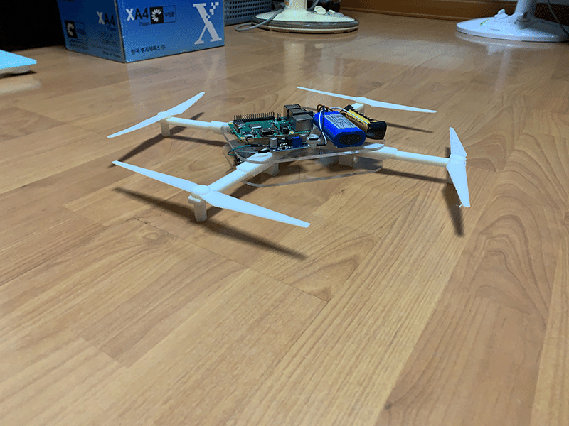

프로토타입
3D 프린터로 부품 출력

회로 연결
작동 테스트
전류가 너무 낮아 라즈베리파이가 정상적으로 켜지지 않는 문제가 발생하여 배터리 두개를 직렬 연결하려 했으나, 전압 강하 모듈이 없어 테스트가 불가능해 테스트는 수행하지 못했습니다.
조립

실제 구동을 하기는 어려울 것 같아 사이즈, 무게 등을 보기 위해 프로토타입 대신 목업을 제작하는 방향으로 선회했습니다.
문제점 & 개선방안
전류가 매우 낮아 전기 공급이 원할하게 되지 않음
-> 배터리를 직렬로 연결하고 강하 모듈을 사용
3D 프린터로 출력한 부품들의 구멍 크기가 모델링보다 작게 나와 부품이 들어가지 못함
-> 모델링 할 때 치수를 더 크게 설정
크고 무거움
-> 경량화, 소형화 (라즈베리파이 대신 아두이노 나노를 사용하는 것으로 변경, 더 작은 배터리 사용)
기능추가
-> 자동으로 착륙할 수 있도록 적외선 센서를 하단에 탑재
-> 드론 끝에 LED 부착
프로토타입 제작 후기
기능 구현에 실패한 점, 실제 크기를 가늠하지 못하고 모델링을 너무 크게 한 점이 가장 아쉽습니다. 프로토타입의 실패를 바탕으로 많은 점들을 배웠고, 개선 방안도 마련하게 되었습니다. 본 모델을 만들 때는 꼭 드론을 날리는 데 성공했으면 좋겠습니다.